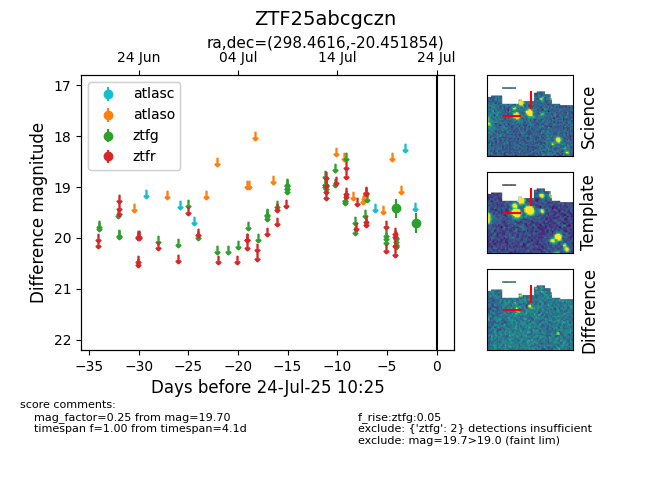

Target ZTF25abcgczn at 2025-07-24 10:25, see:
FINK: fink-portal.org/ZTF25abcgczn
Lasair: lasair-ztf.lsst.ac.uk/objects/ZTF25abcgczn
ALeRCE: alerce.online/object/ZTF25abcgczn
alt names
ZTF25abcgczn (ztf,fink)
coordinates:
equatorial (ra, dec) = (298.4616,-20.45185)
galactic (l, b) = (20.6739,-22.55742)
photometry
last ztfg=19.70
2 ztfg detections
